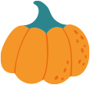
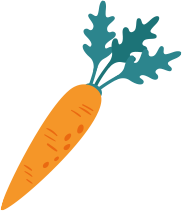
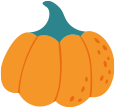
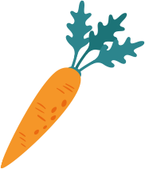

SCROLL
2022.12.10
いよいよ明日12/11(日)、フナベジ初マルシェ「つながるSDGsわわわのわ」開催です
2022.12.9
本日、フナベジLINEで当日限定100円クーポン配布しました
2022.12.8
出店者紹介vol.4は、焼き芋業界注目の的！「ワイルドな焼き芋屋」さんです
一覧を見る
船橋を中心とする千葉県の野菜をリーズナブルな価格で販売する直売所です。近隣収穫、農家直送だから鮮度と美味しさが違います！ 店内はお洒落な仏マルシェをイメージ。 ちょっと変わった野菜も、かわいいPOPで栄養素や効能、美味しくて簡単なレシピを楽しくご紹介。毎日のお料理に役立つ情報満載で楽しくお買い物ができます。 お店で気に入った船橋／千葉の野菜をお友達や親戚にgiftする 「フナベジ・アソートメント」 も好評です。

私達は、船橋／千葉の都市型農家支援を経営理念として2022年2月に開業しました。 食糧自給率低下（2021年度カロリーベースの食料自給率38％）、農業就業人口の減少（2010年度比35％減）は日本の大きな社会課題です。野菜の価格の高騰は「地産地消」することで克服することができます。 船橋市民が毎日ローカル野菜を食卓でいただく。そんな当たり前のことを普及させること。そして、農家生産者がリスペクトされる社会を作ることがフナベジのミッションです。
フナベジ｜Farm in Town 〒274-0053 千葉県船橋市豊富1482-235 TEL : 047-456-2750 OPEN : 10:00-17:00 CLOSE : 不定休

フナベジの新鮮で美味しい野菜を船橋市内のレストラン、お弁当・惣菜店等の事業者様にお届けしています。お取引き事業者様は随時募集しています。ご興味のある事業者様は、お問い合わせフォームからご連絡願います。 注）個人様への宅配は現在実施しておりません。
Casa Della Pizza〒274-0065 千葉県船橋市高根台3丁目3-4047-402-4110https://casadella-pizza.com/

Cotory Deli（お弁当・惣菜） 〒273-0865 千葉県船橋市夏見4丁目23-30 ヤノビルBld No.5

鉄板焼 九九〒273-0005 千葉県船橋市本町7丁目17-20050-5488-5126https://ggwa400.gorp.jp/

cafe Delizo〒274-0815 千葉県船橋市西習志野2-9-6080-9040-4532
Casa Della Pizza〒274-0065 千葉県船橋市高根台3丁目3-4047-402-4110https://casadella-pizza.com/
Casa Della Pizza共立習志野台病院〒274-0063 千葉県船橋市習志野台4丁目13-16047-466-3018https://www.kyoritsunarasinodai.or.jp
その他船橋市内飲食店
フナベジ公式アカウントと友だちになって、今すぐ受け取ってください。